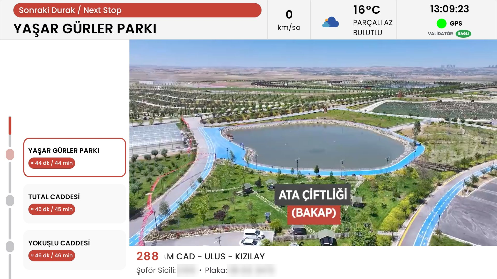
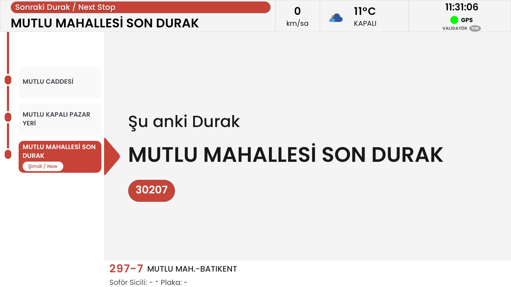
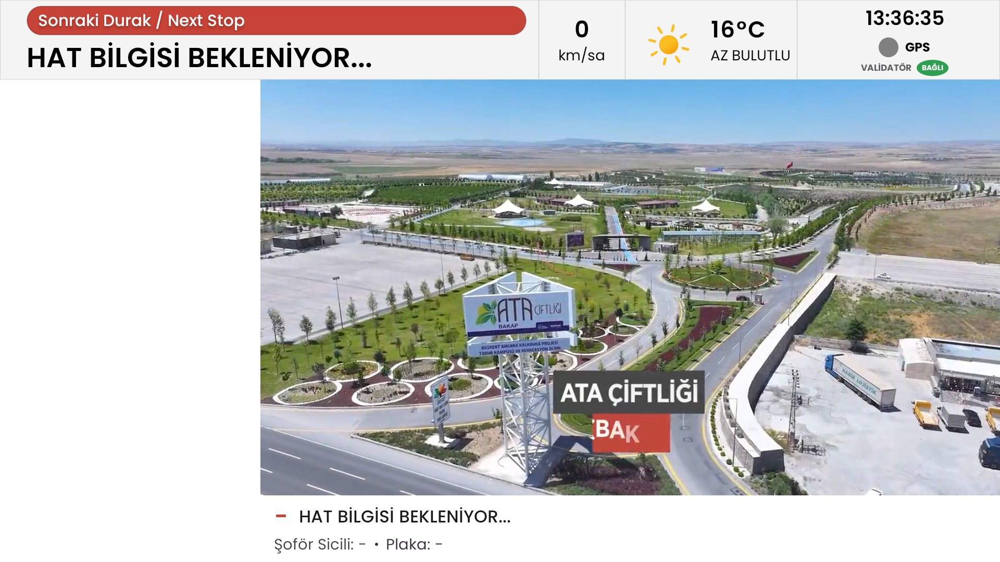

EGO Bus Panel
Passenger-facing information experiences designed for Android-powered public transport displays.
Developed at Rubuplus



My role & ownership
I developed the Android application for EGO Bus Panel as part of my work at Rubuplus, and handled its deployment to dedicated Android devices.
Project context
Passenger information systems must communicate route and stop information in a format that can be understood quickly on shared displays. On-board hardware and changing operational conditions make reliability especially important.
Areas of work
- Android interfaces for passenger-facing displays
- Route and stop information presentation
- Dedicated on-board device workflows
- Operational testing and issue investigation
Engineering approach
The design focus is on readable information hierarchy and consistent behavior on dedicated displays. Device-specific integration and real-world testing are central considerations for this type of system.
Engineering considerations
- Presenting route and stop information clearly
- Handling intermittent location or operational inputs
- Maintaining usable display states on dedicated hardware
Android device deployment
Experience developing and refining Android passenger information workflows for a public transport setting.
Structure & technologies
- Kiosk-mode Android application on dedicated on-board displays
- Integration with on-board vehicle and route data through a local service
- Offline route and stop data, location tracking and on-device voice announcements
- Field testing on buses in service
Confidentiality note: This project was developed at Rubuplus and is not a personal project. Screens are shown with client logos removed and vehicle identifiers blurred. Internal protocols, vehicle data, client-specific specifications and source code are not shared; the repository is private.